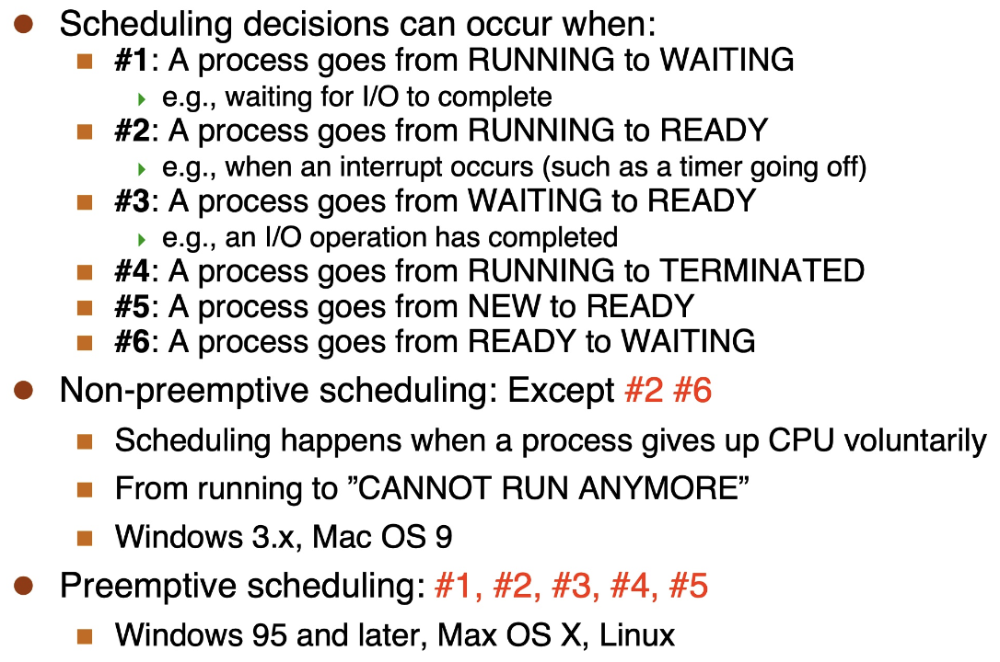
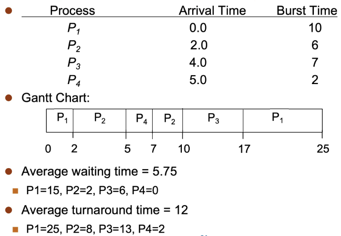
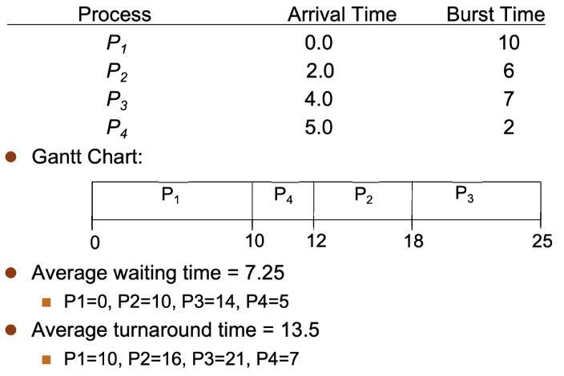
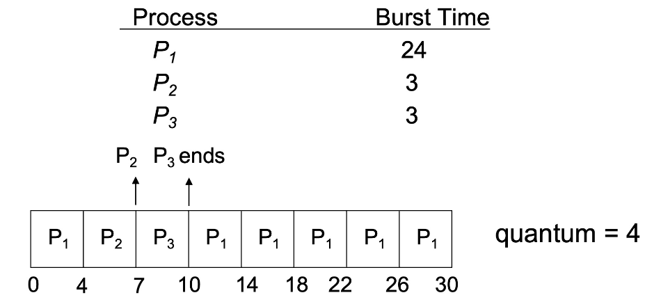
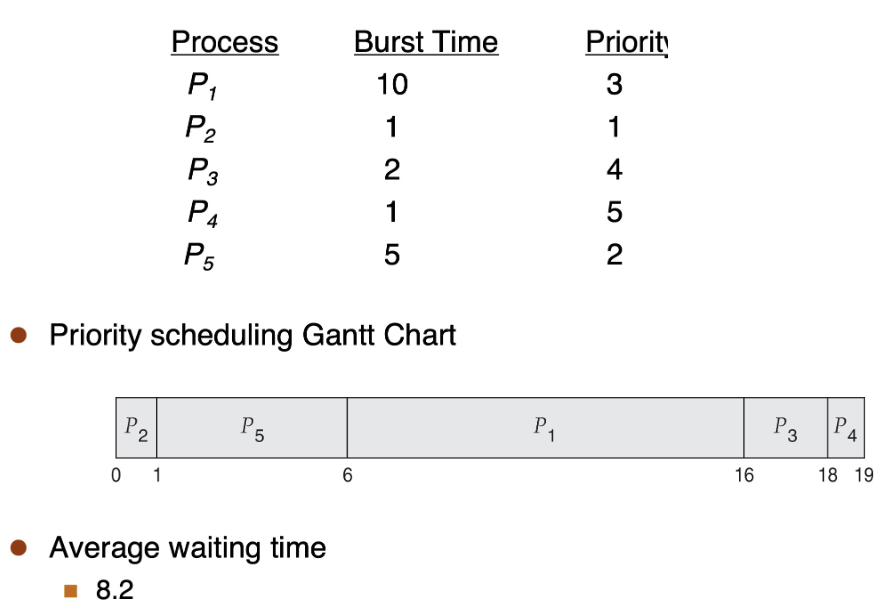
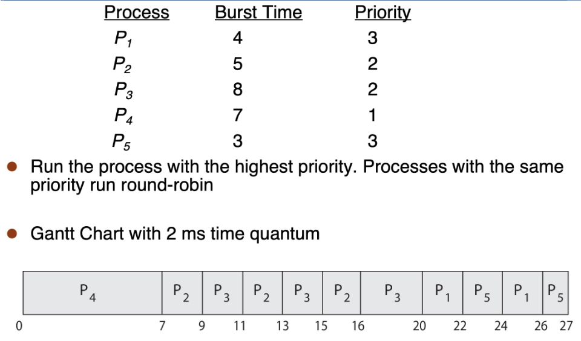
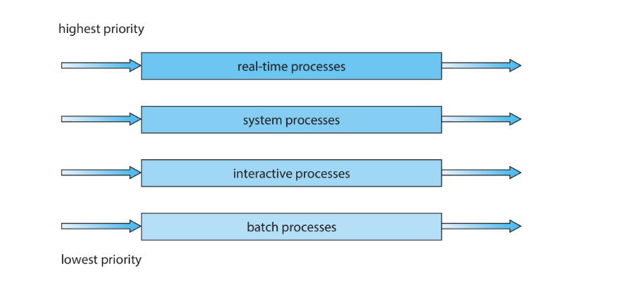
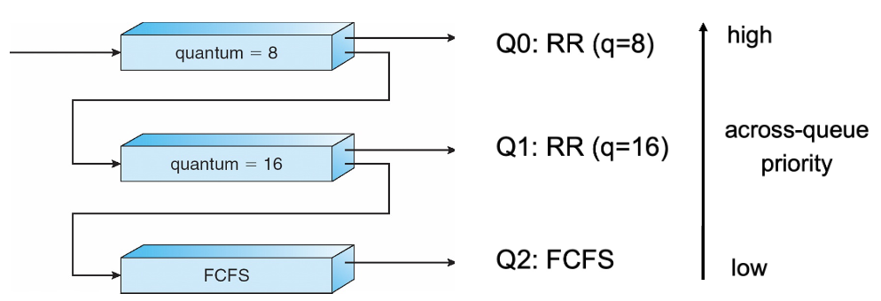
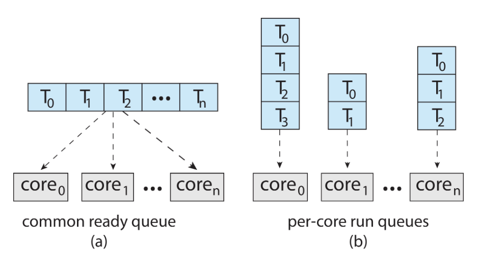
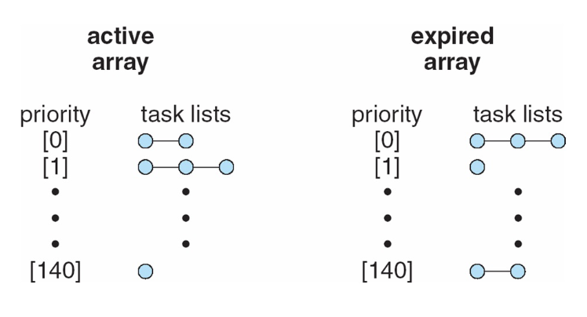

CPU 调度¶
- 定义：由操作系统做出的决策，用于确定哪些就绪的进程/线程应当运行以及运行多长时间
note
- 在多道程序设计环境中是必要的
- CPU调度对于系统性能和效率至关重要：最大化CPU利用率，使其永不空闲
- 策略：调度算法
- 机制：调度器
- 操作系统的一个组件，用于在进程之间切换
- 该机制又依赖于上下文切换机制
- 必须极其迅速（调度器延迟）
- CPU-I/O 突发周期
- 大多数进程交替进行CPU计算和I/O操作，这种交替活动形成一系列突发
- 进程总是以CPU突发开始和结束
- 两类典型进程
- I/O-bound 进程：主要时间花费在等待I/O操作上，包含许多短暂的CPU突发 e.g.文件复制命令
/bin/cp - CPU-bound 进程：主要时间用于执行CPU计算，I/O突发非常短暂（甚至几乎没有） e.g.图像增强处理
- I/O-bound 进程：主要时间花费在等待I/O操作上，包含许多短暂的CPU突发 e.g.文件复制命令
- 进程类型的多样性使得CPU调度变得困难
CPU 调度器¶
- 基本功能：每当CPU空闲时，必须选择一个就绪进程来执行
note
操作系统负责跟踪并维护所有进程的状态。
- 调度方式
-
非抢占式调度：一个进程会一直占用CPU，直到它主动放弃，也称为“协作式”调度
复杂性
会引发许多棘手的进程同步问题
- 共享数据的访问
- 内核模式下的抢占
- 操作系统关键活动中发生中断
-
抢占式调度：即使一个进程可以继续执行，也可能被强行剥夺CPU使用权
优势
- 无需依赖进程主动释放CPU
- 操作系统始终保持控制权
Example

- 调度目标：存在许多相互冲突的目标
- 最大化CPU利用率：提高CPU非空闲时间的比例
- 最大化吞吐量：提高单位时间内完成的有效工作量
- 最小化周转时间：缩短从进程创建到进程完成的总时间
- 最小化等待时间：减少进程在就绪状态下的等待时间
- 最小化响应时间：缩短从进程创建到接收到首次响应的时间
调度指标
- CPU 利用率：尽可能保持 CPU 处于忙碌状态
- 吞吐量：单位时间内完成执行的进程数量
- 周转时间：执行一个特定进程所需的总时间
turnaround time = finish time - arrival time - 等待时间：进程在就绪队列中等待的总时间
waiting time = start time - arrival time - 响应时间：从请求提交到产生第一个响应所需的时间（适用于分时系统环境）
- 调度器 dispatcher：调度器模块将CPU控制权交给被调度程序选中的进程，包括：
- 切换到内核模式
- 切换上下文
- 切换到用户模式
- 跳转到用户程序中的适当位置以重启该程序
note
实际上就是cpu_switch_to，但是比之前讲的多了调度算法（选择下一个执行的进程）
- 调度延迟：调度器停止一个进程并启动另一个进程运行所需的时间
调度算法¶
FCFS 调度¶
- FCFS（First-Come First-Served）：先来先服务调度算法
- 是一种非抢占式调度
SJF 调度¶
- SJF（Shortest Job First）：最短作业优先调度算法
- 基本思路：选择下一个CPU burst最短的进程
-
抢占式：选择已经到达的进程中剩余CPU burst最短的进程
Example

waiting time = finish time - arrival time - CPU burst time -
非抢占式（shortest-remaining-time-first，SRTP）：选择已经到达的进程中CPU burst最短的进程
Example

- 优劣势
- 优点：被证明是最优调度算法，进程的平均等待时间最短（SRTP）
- 缺点：调度次数较多；无法预测CPU burst长度，可能导致饥饿（长进程一直得不到调度）
- 改进：预测CPU burst时长
- 思路：基于过去的CPU bursts来预测未来的CPU bursts
-
公式：
- 对历史观测到的执行时长进行指数加权平均
- 为近期历史赋予比远期历史更高的权重
\[ \tau _{n+1} = \alpha t_n + (1 - \alpha) \tau _n \]其中
- \(\tau _{n+1}\) 为对第 \(n+1\) 次burst的预测
- \(t_n\) 为第 \(n\) 次burst的观测值
- \(\alpha\) 为介于0和1之间的参数
- \(\alpha = 0\)：不关心最近的历史
- \(\alpha = 1\)：只关心最近的历史
- \(\alpha = 0.5\)：某种折中方案
- \(\tau _n\) 为对第 \(n\) 次burst的预测
RR 调度¶
- RR（Round-Robin）：时间片轮转调度算法
- 是一种抢占式的调度算法，专为分时系统（time-sharing）设计
- 时间片（time quantum）：一个固定的时间间隔
- 基本思路：
- 除非一个进程是唯一的ready进程，否则它每次运行时间不会超过一个时间片，之后就会将控制权让给另一个ready进程
- 如果其CPU执行时长小于时间片，则可能运行少于一个时间片的时间
- ready队列是一个先进先出队列，每当一个进程状态变为ready时，它会被放置在队列的末尾
Example

- 优劣势：通常情况下，平均等待时间比SJF差，但响应时间更好
- 短时间片
- 优点：响应时间更短，交互性好
- 缺点：上下文切换开销较大（如果切换开销占比太高，系统效率就会很低）
- 长时间片
- 优点：上下文切换开销较小
- 缺点：响应时间更长，交互性差（如果时间片非常长，RR就会退化成FCFS）
Priority 调度¶
- Priority Scheduling：优先级调度算法
- 基本思路：
-
为每个进程分配一个优先级
优先级的产生
- 内部产生 e.g. 在SJF中，优先级是预测的执行时间、打开文件的数量等
- 外部指定 e.g. 由用户设置以指定作业的相对重要性
-
根据进程的优先级来确定调度顺序（可以是抢占式的或非抢占式的）
Note
SJF 是一种优先级调度算法，其优先级来自预测的下一次CPU执行时间：执行时间越短，优先级越高
Example

Priority scheduling with Round-robin
基本思路：运行优先级最高的进程；相同优先级的进程采用RR调度
Example

- 问题
- 低优先级进程可能被更高优先级的进程抢占，永远不会执行（这种现象称为饥饿）
- 解决方法：Priority aging
- 随着进程等待时间的增加，逐渐提高其优先级
Multi-level Queue 调度¶
- Multi-level Queue：多级队列调度算法
- 基本思路：将进程分组，为每类进程使用一个ready队列
- 调度类型
- 队列内的调度
- 每个队列可拥有自己的调度策略
- e.g. 高优先级队列可采用轮转调度，低优先级队列可采用先来先服务调度
- 队列间的调度
- 通常采用抢占式优先级调度：只有当所有更高优先级队列为空时，低优先级队列中的进程才能运行
- 或采用队列间时间片分配 e.g. 80%的时间分配给队列1，20%的时间分配给队列2

Multi-level Feedback Queue 调度¶
- Multi-level Feedback Queue：多级反馈队列调度算法
- 基本思路：进程可以在队列之间移动（移动特征已发生变化的进程，是实现Priority aging的好方法）
- 步骤

- 新进程到达，被放入Q0，并在某个时刻获得长度为8的时间片
- 如果它没有用完整个时间片，则很可能是一个I/O-bound 进程，应保留在高优先级队列中，以确保在它偶尔需要CPU时能够获得CPU
- 如果它用完了整个时间片，则被降级到Q1，并在某个时刻获得一个为16的时间片
- 如果它又用完了整个时间片，则很可能是一个CPU-bound 进程，它会被降级到Q2
- 此时，该进程只有在没有非CPU-bound 进程需要CPU时才会运行
- 原理（Rationale）：非CPU-bound 进程在偶尔需要CPU时应当能快速获得 CPU，因为它们可能是交互式进程
优点
多级反馈队列方案非常通用，因为它高度可配置；但是，需要相当多的计算开销
调度算法的测试
- 使用理论/分析结果（很少）
- 模拟：通过生成甘特图（而非手动）来测试一百万种情况
- 实际实现：针对某个基准工作负载，分别运行
多处理器调度¶
SMP¶
- Symmetric Multi-Processing：对称多处理器
- 基本思路：每个处理器能够自行调度
- 方案
- 所有线程可以位于一个公共ready队列中
- 每个处理器也可以拥有自己私有的线程队列

- 负载均衡（Load Balancing）
- 目的：保持工作负载均匀分布
- 方法：
- 推送迁移：定期任务检查每个处理器的负载，如果发现过载，则将任务从过载的CPU推送到其他CPU
- 拉取迁移：空闲处理器从繁忙处理器拉取等待任务
- 处理器亲和性（Processor Affinity）
- 定义：当一个线程在一个处理器上运行时，该处理器的缓存中会存储该线程的内存访问内容
- 负载均衡可能会影响处理器亲和性，因为为了平衡负载，线程可能会从一个处理器迁移到另一个处理器，但这会导致该线程失去原处理器缓存中的内容
- 分类：
- 软亲和性：操作系统会尽量让线程在同一个处理器上运行，但不做保证
- 硬亲和性：允许进程指定一组它可以运行的处理器
Multi-core CPUs¶
- Multi-core CPUs：多核处理器
- 基本思路：在同一物理芯片上放置多个处理器核心
- 优点：速度更快，功耗更低
Multi-threaded Multi-core¶
- 定义：每个核心也可以有多个线程（利用内存延迟期，在等待内存读取的同时，在另一个线程上继续执行）
- 芯片多线程（chip-multithreading，CMT）：为每个核心分配多个硬件线程
- intel将此称为超线程
- 在一个四核系统上，如果每个核心有2个硬件线程，则操作系统会看到8个逻辑处理器
两级调度
- 操作系统决定在逻辑CPU上运行哪个软件线程
- 每个核心如何决定在物理核心上运行哪个硬件线程
示例¶
windows XP¶
- 调度机制：基于优先级、时间片、多队列的抢占式调度
- 32级优先级：数值越高，优先级越高
- 可变类别：优先级 1～15
- 实时类别：优先级 16～31
- 调度策略：
- 当线程的时间片用完时，除非该线程属于实时类别（优先级 > 15），否则其优先级会被降低（可能是一个CPU密集型线程，我们需要保持系统的交互性）
- 当线程“唤醒”时，其优先级会得到提升（很可能是一个I/O密集型线程）
- 提升的幅度取决于线程在等待什么，保持交互性是一个关键考虑因素
- idle 线程：优先级为0或没有优先级
- 如果没有其他线程可以运行，它就会运行（但什么都不做）
- 优点：简化了操作系统设计，避免了没有进程在运行的情况
Linux¶
nice：一个可以调整进程优先级的用户空间参数
- 数值越小，优先级越高
nice -10 ./a.out：设置程序优先级ps -e -o uid,pid,ppid,pri,ni,cmd：查看优先级信息
- 优先级：数值越低，优先级越高（0～140）
Linux 0.11¶
- 调度策略：RR + Priority
- 数据结构：数组
- Linux 1.2
- 调度策略：RR + Priority
- 数据结构：循环队列
Linux 2.4¶
- 调度策略：调度以周期（Epoch）为单位进行
- 周期内：每个任务获得一个时间片
- 周期结束条件：所有就绪任务的时间片都用完
- 时间片计算规则
- 如果任务用完整个时间片，下个周期获得相同时间片
- 如果任务未用完时间片（如I/O阻塞），下个周期获得更大时间片
- 计算出的优先级更高，但是实际上不占用CPU
- 效果：交互式/I/O任务醒来时能快速获得CPU响应
goodness：nice值越大，weight越小，调度优先级越低
schedule：Nice值越大，counter越小，时间片越短
| C | |
|---|---|
- 时间复杂度：\(O(n)\) （遍历整个就绪任务列表）
Linux 2.6¶
- 改进：\(O(1)\) 调度器
- 在一个调度周期内，任务可以是活动状态或已过期状态
- 活动任务：其时间片尚未完全消耗完
- 已过期任务：已用完其全部时间片
- 内核维护两个轮转队列数组（活动任务/过期任务）：每个优先级级别一个轮转队列

- 优先级数组数据结构
| C | |
|---|---|
- 位图（Bitmap）
- 作用：用于快速判断某个优先级是否有Ready任务
- 无需遍历所有优先级级别，因此时间复杂度为 \(O(1)\)
- 重新计算时间片
- 当一个任务的时间片用完时，它会从活动队列移到过期队列
- 此时，任务的时间片会被重新计算：不需要一次性重新计算所有时间片，保持 \(O(1)\) 时间复杂度的特性
- 当活动队列为空时，它会与过期队列交换：指针交换 \(O(1)\)
- Linux \(\geq\) 2.6.23
- \(O(1)\) 调度器的问题：内核代码变得混乱且难以维护
-
CFS：完全公平调度器
- 主要思想：跟踪CPU分配给任务的公平程度，并纠正不公平现象
- 虚拟时间：自任务启动以来，任务获得CPU的时间间隔总和（可能远小于任务启动以来的实际时间）
- 调度器的目标：将CPU分配给虚拟时间最小的任务
- 任务存储的数据结构：红黑树
- 时间复杂度 \(O(\log n)\)
- 检索“最不快乐”的任务 \(O(\log n)\)
- 任务运行一段时间后，更新其虚拟时间 \(O(1)\)
- 将其重新插入红黑树 \(O(\log n)\)
Notice
执行少量CPU突发的I/O任务永远不会拥有较大的虚拟时间，因此将保持高优先级